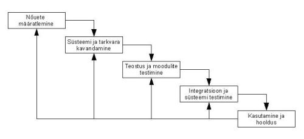

Kosemudel (ehk waterfall)
on üks esimesei tarkvaraarebdyse elutsükli mudeleid. Ta põhineb tavalise tootmis-
protsessi eeskujul, kus iga etapp eelneb järgmisele. Tagasipöördumine eelmisesse etappi on keeruline ning kui
eelnevas etapis avastatakse viga, tähendab see seda, et vea juurde saab tagasi tulla alles siis, kui tarkvara
on kasutusse läinud.
Kosemudel koosneb viiest etapis, mis rahuldab kõiki üldise tarkvaraarenduse elutsükli etappe
nendeks on: nõuete määratlemine, süsteemi ja tarkvara kanavadmine, Teostus ning moodulite testimine, integratsioon ka
süsteemi testimine ning kasutamine ja hooldus.
Siin etapis dokumenteeritakse arendatava toote või süsteemi nõuded, käitumine, sihtriistvara jms. vahest jaotatakse see etapp kaheks
- süsteemi analüüs ja nõutete analüüs.
Teises etapis kavandatakse arendusele mineva tarkvaratoote süsteem ja struktuur, keskenduses selle funktiosaalsetele
omadustele. Need võivad olla erinevad andmestruktuurid, toote enda arhitektuur, erinevad liidesed, nende liideste omadused
ja muud algorithmilised detailid. Kavandamise tulemused dokumenteeritakse, ning mille järgi holjem teostuses hinnatakse
projekti kvaliteeti - mid arohkem kavandist tehtud on seda rohkem on projektist valminud.
Eelnevalt valmiud kavandi järgi toimib selles etapis toote arendus. Arendustöö kõigus arendatakse programm moodulihaaval
või moodulite kogumikuna. Peale arendustööd testitakse valmissaanud mooduleid ja moodulikogumikku: Olenevalt eelnevalt
dokumeeritud kavandi detaisusest tuleneb nüüd selles etapis projekti arenduslihtsus. Mida rohkem on detaile kavandaud,
seda lihtsam on arendustöö.
Toimub kogu valmissaadud tarkvarasüsteemi testitmine. peale testimist tarvitatase toode kliendile ja/või sihtrühmale.
Testitakse sellest vaatepunktist, kas süsteem teeb seda mis eelnevalt dokumenteeritud ning testitakse ka, et süsteemis olevad erinevad
detailid on loogilised.
Tegu on kõige pikema tarkvara elutsüklis oleva etapiga. Siin toimub vigade parandus, funktsionaalsuse muutmine ( kas
siis kliendi, turu, keskkonna või sihtrühma sisendi tagajärjelt või vajadusel) ja koodi enda refaktoreerimine.
Arendustöö teostamiseks korratakse kõiki eelmisi etappe, kuid siis ainult süsteemi muutmise tarbeks, mitte nullist
Millega uue arendamise jaoks.

| Head küljed | Halvad küljed |
|---|---|
| Nõuded on projekti alguses selgelt paigas | Nõudeid ei saa muuta projekti käigus |
| Valminud toode on 1:1 nõuetele vastav | Arendusmudel ei ole paindlik muudatuste tegemiseks |
| Kulude hindamine on lihtsam, kuna planeerimata ootamatusi tekib vähem, sest nõuded on paigas |
Nõuete paikapanek on keerulisem, kuna arendustööd ei alustata enne, kui kõik nõuded on detailselt paigas, absoluutselt kogu projekti kohta |
Kosemudel sobib kõige paremini suurtele süsteemidele kui seda arendatakse mitmes kohas korraga. Korralik eelnev planeerimine
aitab eri paikades asuvaid meeskondi paremini kordineerida